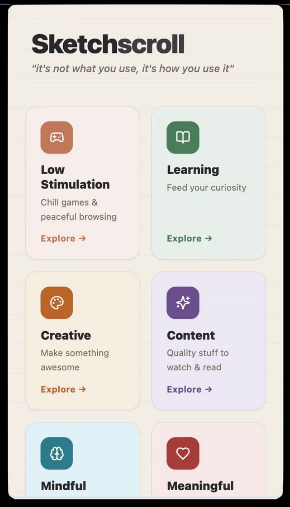
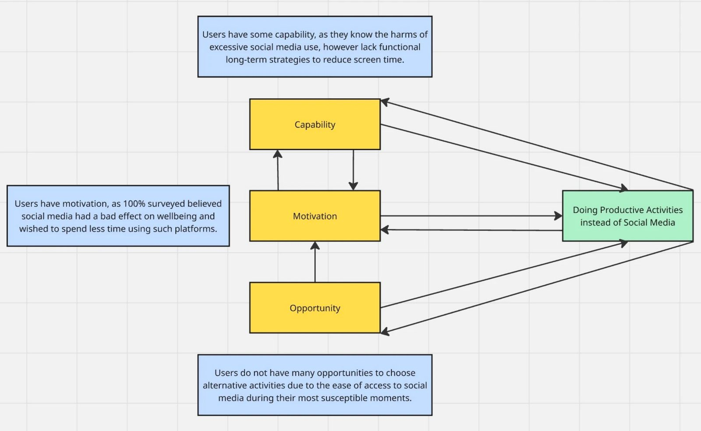
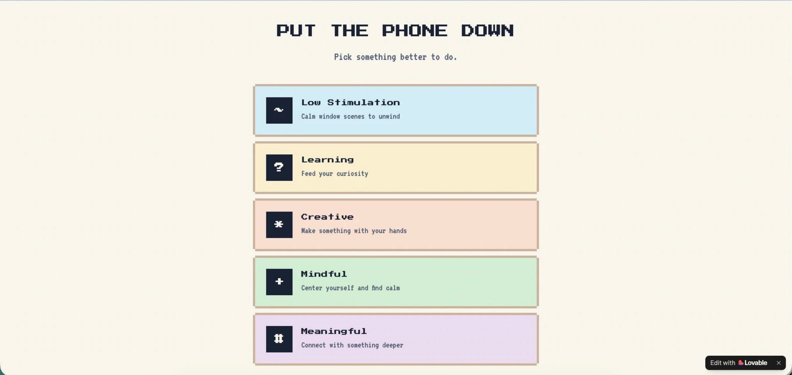
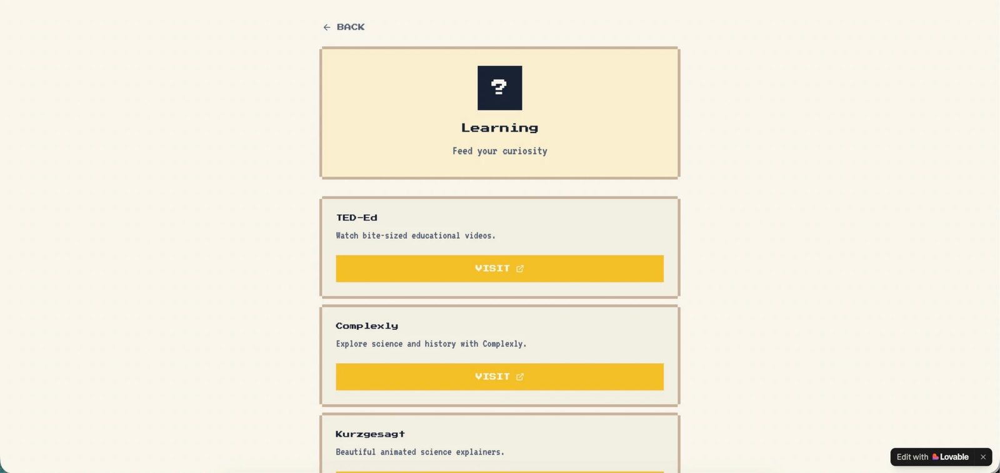
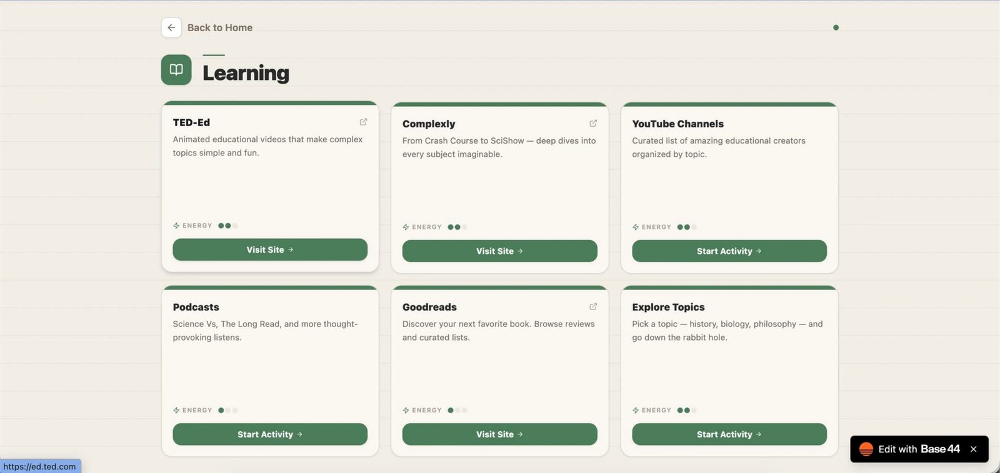

Sketchscroll: A Psychologically Informed Solution to Brainrot Using AI


Short-form scrolling is rewiring attention
- Short-form media (TikTok, Reels, Shorts) uniquely alters brain function by conditioning it to expect instant, high-frequency dopamine rewards with every scroll.
- This mechanism, paired with bite-size, attention-grabbing content, weakens sustained attention spans, promotes cognitive fatigue, and impairs impulse control.
- Consumption is associated with poorer cognitive performance, increased anxiety, and reduced motivation for slow-paced tasks.
Insight
- Users overwhelmingly want to spend less time on social media and short-form content in particular.
- Users reach for social media when they need a distraction — it's the easiest and most available option.
- Users want to feel productive and in control of their time.
- Per the COM-B model, users need to feel capable and motivated when faced with the opportunity to engage in the desired behaviour, or behaviour change won't stick.
Design decisions
- An easy-to-navigate dashboard with categories of activities, so users have the opportunity to choose something other than social media.
- An array of activity ideas within each category, so users have the capability to do something no matter their energy level.
- A minimalist, easy-to-navigate UI so the focus stays on redirecting attention toward productive activities, boosting motivation.
Outcome
- Users enjoyed the sleek UI and responsiveness of the website.
- Users felt they would use this product if it also had app-blocking and personalisation features.
- Users wanted more detail on each page and more recommended activities.
Next steps
- Learning to "vibe code" to bring this project further to life.
- Adding personalisation features, and in time, app-blocking features on a mobile version.
Surveying the gap between actual and desired behaviour
I surveyed 20 social media users on their current and desired relationship with social media — actual vs. desired consumption, what they do in their free time, and how cognitively overwhelmed they felt in general.
Three findings
- They want to cut down. Nearly all participants said they'd like to spend less time on social media and short-form content specifically.
- They reach for it out of ease. There's a significant gap between "actual" and "desired" behaviour, driven by how easy it is to open a device — especially when energy is low.
- They want to feel productive. Participants wanted to spend more time learning, creating, and doing their hobbies.
Core tension: despite wanting to, participants struggle to slow down, evaluate their options, and do something productive or nourishing with their time.
Mapping the gap with COM-B
I mapped the social-psychological principles underlying the gap between intention and behaviour, so I could find a way to close it. The COM-B model says behaviour occurs when a person has Capability (skills), Opportunity (environment), and Motivation (drive) — and behaviour itself feeds back to strengthen or weaken each of them.
Example: someone starts cycling to work. They have the capability (can ride a bike), opportunity (bike lanes exist), and motivation (want to get fit). As they cycle, they get stronger (capability), meet other cyclists (opportunity), and enjoy it more (motivation) — making the behaviour more likely to continue.

Competitive landscape
Screen-time & app-blocking (Opal, Freedom, Screen Zen, One Sec)
Pro: increases opportunity via friction. Con: gives no capability to do something else — high drop-off.
Gamified behaviour change (Forest, Beeminder, Habitica)
Pro: increases motivation with rewards. Con: motivation shifts to the reward itself, not the underlying goal.
Productive replacements (Headway, Nibble, Finch, Deepstash)
Pro: real alternative activities. Con: doesn't address why people reach for social media to decompress in the first place.
Every category missed at least one leg of Capability, Opportunity, or Motivation — so my platform needed to address all three together to support lasting behaviour change.
From "How Might We" to a hobby library
I generated 20 "How Might We" questions and selected the two addressing the highest-impact pain points:
- Capability & opportunity — How might we provide alternative engagement to users with varying interests and energy levels that change daily and hourly?
- Motivation — How might we maintain focus on avoiding social media and engaging in other activities within the intervention?
To support this, I compiled a library of hobbies and interests users said they wanted to pursue instead of social media, grouped into: Low-Stimulation, Learning, Creativity, Mindfulness, and Meaningful activities.
Solution: the site focuses primarily on maximising users' motivation to step away from social media by giving them real alternative activities matched to their energy and interests, improving their sense of capability to choose those options.

From Lovable to Base44
I used Lovable and Base44 to build interactive prototypes and test usability and UI, ensuring WCAG compliance through semantic tags, accessible forms, ARIA attributes, keyboard navigation, and text alternatives. Users strongly preferred desktop, but a mobile version has a unique advantage: it can block other apps and encourage alternative activities, adding friction at the exact moment someone opens social media.
For the first prototype, I used a soft pastel palette for a calm, approachable feel, paired with pixel-style typography and game-inspired icons to boost usability and approachability, with a minimalist layout to reduce cognitive load. It was a solid foundation, but the iconography lacked visual impact and didn't align with the palette — and Lovable's credit system limited how far I could refine the functionality.
Switching to Base44 gave me far more control over interaction logic, data structures, and layout. I fixed core issues around layout consistency, visual hierarchy, and interaction feedback, resulting in a more cohesive, scalable, and polished prototype.


What five users told me
I gathered five users to test the prototype and interviewed them on their first impressions, emotional response, clarity of flow, and whether they'd use it in real life.
UI
The information hierarchy felt smooth and elegant, and helped users feel in control when selecting an activity — though the topic colours could be more distinct and some category names (e.g. "mindful" vs. "meaningful") were confusing.
Capability
Users felt this improved on habit-tracking apps by offering real alternative activities rather than chores, providing a near 1-to-1 replacement for social media use.
Opportunity
The range of activities helped users feel more in control of their choice — they wanted the ability to personalise suggestions to their own interests.
Motivation
Users felt more motivated to stay off social media when given the opportunity and availability of alternate activities, and said they'd use this alongside app-blocking, similar to Opal.
What AI could — and couldn't — do
Turning written instructions into responsive code with AI gave me a lot more power as a junior researcher and designer, but I felt the prototype lacked the personal touch I was looking for. It was fantastic to learn tools that didn't exist before — including Claude's coding features and other AI-assisted UX tools like Figma Make — but I'm wary of letting them overshadow the human element behind design.
I'd love to turn this into a real product people can use to put control of their time back in their own hands. Next, I want to keep learning HTML and CSS, and experiment further with AI coding tools, to bring this project to life for real — with personalisation and app-blocking features to follow.